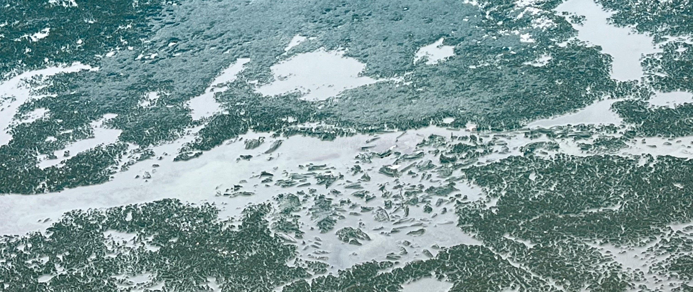
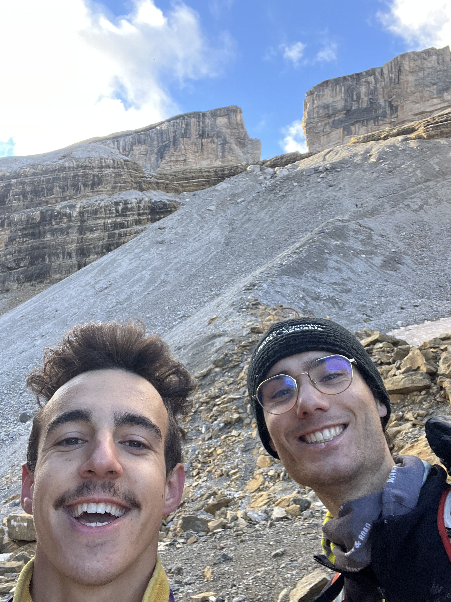
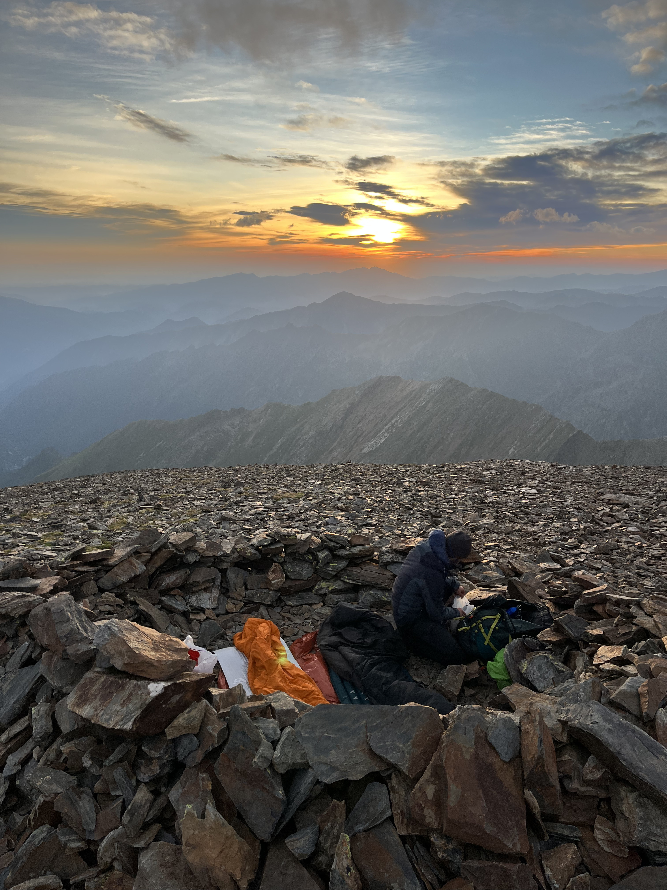
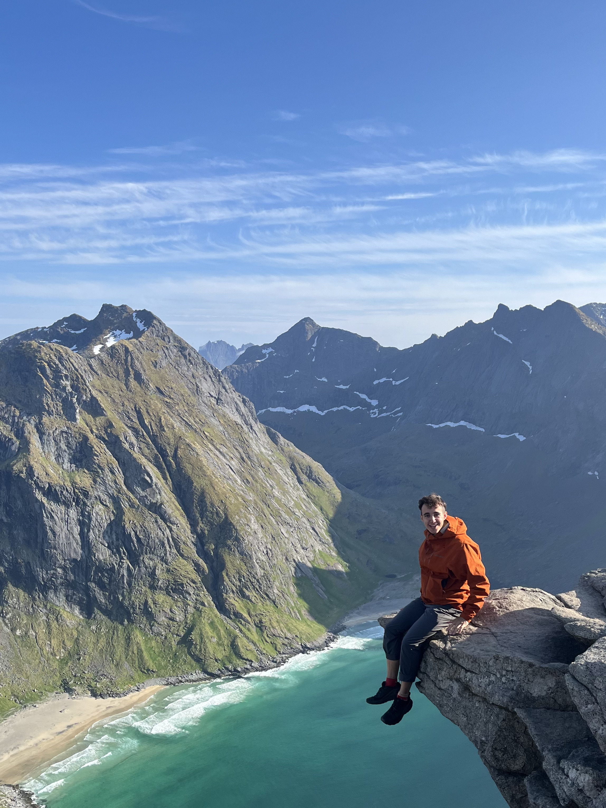

Santiaguito - Guatemala
Impressionant, indescriptible, éprouvant... Un des volcans les plus actifs d'Amérique Centralel
Volcarno, un journal de bord d'ascensions volcaniques, et autre !
!! SITE EN DEVELOPPEMENT !!
Impressionant, indescriptible, éprouvant... Un des volcans les plus actifs d'Amérique Centralel

Un des volcans les plus connus au monde, en éruption continue, à la forme parfaite.

Un cratère digne d'une autre planète, un lac acide aux couleurs époustouflantes.

Un volcan qui se mérite, en pleine jungle, aux émissions de vapeurs souffrées gigantesques.

Un cratère aux dimensions exceptionnelles, insaisissables, au fond rougeoyant.

Un des plus jeunes volcans d'Amérique, tout en contraste avec la jungle environnantes.

Assez proche de la capitale pour y aller en transport public, un géant du Costa Rica.

Un volcan mythique, à l'ascension technique et au sommet très très chaud.

Je suis Arno, ingénieur passioné de nature, de sport, de volcans, et de tout plein d'autres sujets. Ce journal de bord à pour but de regrouper toutes mes activités, mes connaissances, mes photos, et partager ma passion.
Mon intérêt se porte sur tout ce que la nature créé mais qu'on ne peut pas saisir, par sa grandeur, par sa nature, par sa distance, mais avec quoi, pourtant, on cohabite. L'immesurable grandeur de l'espace, la fascinante observation du passé à travers la lueur des étoiles, les phénomènes météorologiques aux gigantesques nuages et masses d'air en suspension, la régulation atmosphérique par le volcanisme, ou encore les éruptions aux puissances inégalable... Depuis longtemps je voulais regrouper tous mes souvenirs, mes activités et mes voyages lié a cette passion au même endroit, sans savoir quelle forme donner à cela. Finalement, un blog me permet d'acquérir de nouvelles compétences (HTML, CSS, JS), de partager plus largement mes activités et de donner des idées aux quelques aventuriers qui tomberaient sur mon site par mégarde, et correspond à ce que j'imaginais pour sauvegarder mes expériences. Vous trouverez plus d'information sur mon journal de bord en cliquant sur le gros bouton dessous !
Ici les liens des dernières publications, tout type confondu (randonnées, voyages, informations, articles, ...).

Octobre 2025 - Entre randonnées et via ferrata - 10 jours avex Thib.

Septembre 2025 - Trail de 30 kilomètres au départ des Granges d'Astau, jusqu'au fameux pic de Perdiguère.

Aout 2025 - Randonnée sur 2 jours avec bivouac au sommet, et ascension de 3 sommets Pyrénnéens mythiques de plus de 3000m.

Juin 2025 - Voyage de 10 jours en Norvège, sous le soleil (ou les nuages) de minuit.